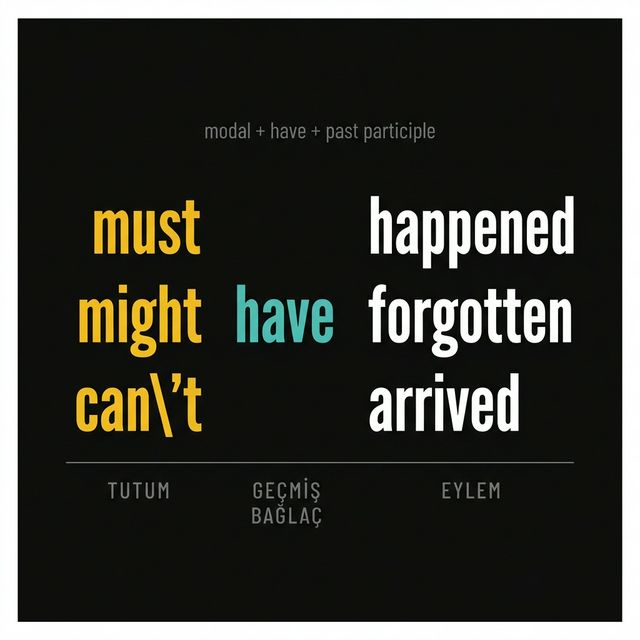

MUST HAVE
Something must have happened to him.
Kanıta dayalı güçlü çıkarım — neredeyse kesin, geçmişte oldu
MIGHT HAVE
She might have missed the train.
Zayıf geçmiş tahmin — belki oldu, emin değilim
COULD HAVE
I could have helped you.
İmkân vardı ama gerçekleşmedi — geçmişte mümkündü
SHOULD HAVE
You should have called me.
Beklenti vardı ama olmadı — hafif eleştiri içerir
CAN'T HAVE
They can't have arrived yet.
Güçlü ret — geçmişte olmuş olamaz
